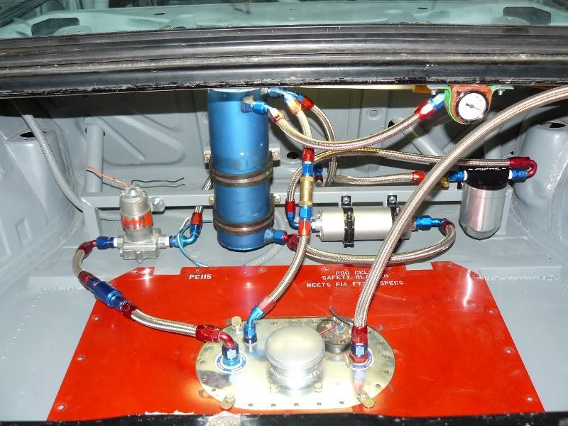
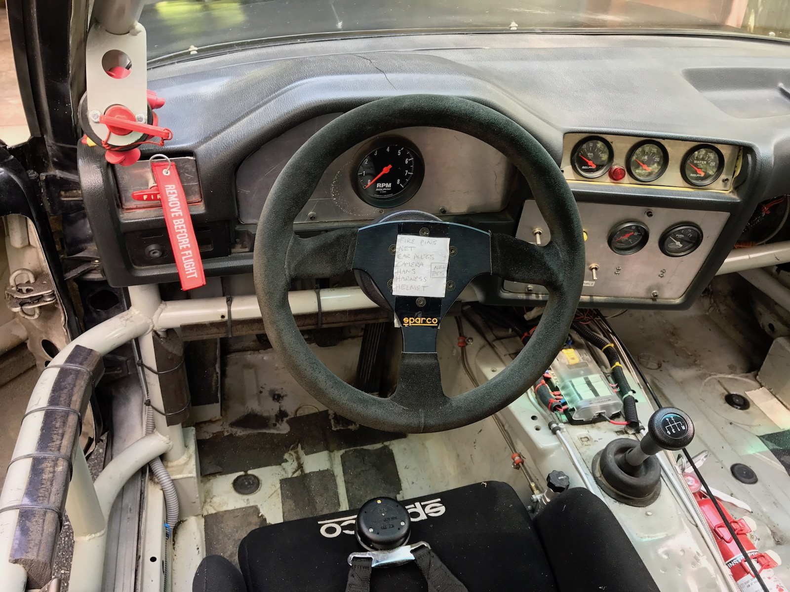

This is a solid, reliable car that's been stored in a climate-controlled garage for the last few years. It starts and runs fine. Will need new tires and tech inspection. Could use some cosmetic touch-ups too. Otherwise, it's ready to go. I have the SCCA logbook and documentation/paperwork for most of the work that's been done.
The wiring harness was stripped to remove OBD1, fuel and O2-heat relays, gauge cluster ... and any other wiring not required for proper engine control. This was done for a few reasons, but the main problem was an occasional cut-out midway in the rev range. The harness is now simpler, lighter, and easier to work on when needed.
All unnecessary coolant lines removed. No thermostat.
Stock steering rack. Power steering pump removed (can be reinstalled if desired).
Red Line 50W racing oil in the crankcase, distilled water in the radiator.
FuelSafe racing cell mounted flush with trunk floor (spare tire well removed, stock tank removed). Holley 8psi first-stage pump, Kinsler swirl pot, metered return line, fuel sampling port, high-pressure second stage pump and filter. Interior send and return lines with fittings at the rear bulkhead and firewall. Stock fuel rail, regulator, and injectors. Electric fuel pressure gauge on the dash. Runs on pump gas.
The clutch uses a heavy duty pressure plate with a soild six-puck ceramic disc.
The flywheel and clutch came from BimmerWorld as a kit. The pressure plate and wheel were balanced at Tyson's Automotive Machine in Sterling, VA. The result is faster engine revving and clutch engagement.
The stock 3.73 diff was replaced with a stock 4.10, which allows better use of the gear range at tracks like Summit Point. (Original diff is included in sale.)
D-Force 15" wheels, BimmerWorld bullet-nose studs, Turner wheel spacers. Also have a set of Team Dynamics wheels that I use for mounting rain tires.
Brakes are ventilated. Stock rotors and calipers with stainless steel lines and brass bushings. I used Hawk DTC-60 pads on the front and HT-10's on the rear. Brake fluid is ATE Blue.
ABS module deleted. New brake lines. Front-rear brake bias control mounted on tunnel next to driver seat. Emergency brake deleted.
I ran the car with the rear sway bar disconnected which keeps the inside front wheel planted better on fast sweepers.
Ireland Engineering fiberglass hood (5 pins) and deck lid (Dzus fastened). Ireland Engineering ABS plastic fender flares. Stock windshield. Lexan rear and quarter windows. Door windows and regulators removed. Rear bumper removed. Sunroof and cassette replaced by a welded steel roof panel (bodyworked and painted). Front bumper shocks replaced by solid mounts with removable tow ring. Stock tow bar in back.
The hood has a small crack from a minor bounce off a tire wall at Summit Point (oil on the track in a braking zone - yahoo). I never got around to fixing it. All 5 pins still align. The right front fender was also replaced (it's flat black and doesn't match the stock gloss black paint). The damage was limited to body panels (the car was raced later the same day).
Roll cage built by Piper Motorsport in Virginia. Anchored to firewall and trunk floor. Includes door bars on the driver side, dead pedal, and window net attachment points. SCCA cage #42-3718.
Original dash gutted, cluster deleted, custom fuse box on tunnel. Optima PC680 gel battery mounted on the floor.
Wink 4-panel rear view mirror, stock side mirrors. Sparco Pro ADV racing seat. Schroth 6-point harness anchored to floor and cage. No passenger seat.
Gauges
Controls
E.S.S. 2.3 Liter AFFF SFI fire system with pull-cable on the dash; two nozzles in the engine bay and one in the cockpit. Extra hand-operated extinguisher on the floor within driver's reach.
Warning lights are included for low voltage and oil pressure but they're not connected.
Brake bias adjuster next to driver seat.
The car is located in the central Maryland/Washington DC area near Gaithersburg.
Buyer arranges for pickup or shipping. The car isn't street-legal, so a trailer is required.
I have the Maryland title in my name. The car is unlicensed and uninsured.
To see the car in person or get your questions answered, contact Scott at 87e30racer@gmail.com.
I also have a partial M3 composite body kit made by Mario Langsten at Vintage Sports & Restoration. The kit includes air dam, front fenders, and side skirts. (VSR wasn't able to provide rear quarter panels or rear bumper cover.) Note that these are not BMW parts; they're lightweight composites. Make me an offer.